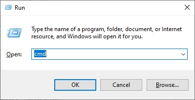
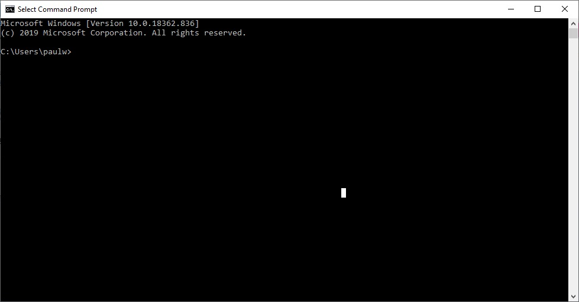
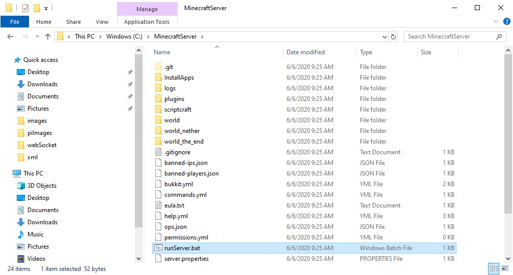
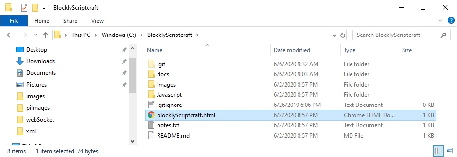

Windows 10 Setup
Git
Local Minecraft Server and Blockly
Open a cmd window
- Hold the Windows key and press the r key
You should see:

- Enter the command: cmd
You should see:

Enter the command:cd c:\
Enter the command:git clone https://www.github.com/Paulware/MinecraftServer
Enter the command:git clone https://www.github.com/Paulware/blocklyScriptcraft
Run the server by double-clicking the runServer.bat file in c:\MinecraftServer from windows explorer like:

Run the scratch program by double-clicking C:\BlocklyScriptcraft\blocklyScriptcraft.html and open using google chrome like:
